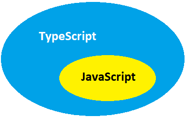

Before proceeding with this document, it is important that you understand
that TypeScript is built off of JavaScript. TypeScript is everything you would expect to
see in JavaScript with additional features added to improve usability.

The purpose of this document is help those of you who may be new to
TypeScript, transition existing JavaScript code into TypeScript. Before we do this, you
may find it helpful to do a quick internet search explaining what TypeScript is. Here are
a couple of suggested links:
In JavaScript one can get away with not explicitly defining a
variable type. In TypeScript one must make type declarations for all variables. This
allows TypeScript to do a much better job at catching errors in code, especially if an
incorrect type is trying to be used.
Click above to toggle between JavaScript and TypeScript!
Migrating Files
The following steps have been tested in Visual Studios using the
Windows 10 Education operating system.
Create a "build" folder. It is recommended you have a "build" folder to keep your
TypeScript and JavaScript separate.
Set up a tsconfig.json file. You can find basic examples on the internet. I used
this one from class. Make sure it specifies to outDir as "build/".
Make sure your HTML file specifies the pathway to the future JavaScript file that
will be created from your TypeScript file.
In Visual Studios you need to open the terminal.
Make sure node.js is installed (download). Install by running:
npm install
Make sure you install the TypeScript package by running:
npm install -g typescript
In the command line of the terminal run:
tsc.cmd
This will automatically create your JavaScript files in the "build" folder you created.